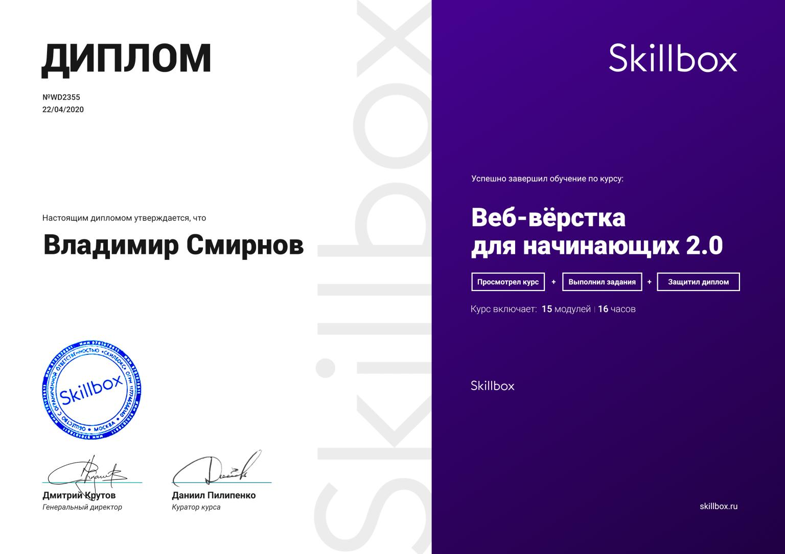

В настоящий момент учусь на веб-разработчика
(онлайн-университет Skillbox),
приоритетно
рассмотриваю вакансии на Junior Front-End Developer,
либо с возможностью совмещения с функциями маркетолога/руководителя проектов. По конкретным
условиям ничего не могу сказать, времена смутные, предлагайте.
В апреле защитился по вёрстке. Проект на HTML + CSS +
jQuery. Впереди ещё две защиты. Сейчас заканчиваю курс по JavaScript, уже приступил к дипломной
работе, затем будет PHP.

Сейчас, параллельно с курсом по PHP, планирую заняться углублённым изучением React JS и
ванильного JavaScript, разобраться в архитектуре языка, понять, как это всё работает. В целом
хочу не зависать на вёрстке сайтов, а двигаться в сторону SPA, изучить, хотя бы на базовом
уровне, NodeJS, понять, как на JavaScript пишут полноценные приложения, в том числе под
мобильные устройства. В целях обучения начну какой-нибудь собственный простенький проект, есть
пара идей, осталось найти время. Всё будет на гитхабе.
С компьютерами познакомился во втором классе, ходил в
кружок по информатике, учил бейсик на 286-м. Чуть позже дома появился ZX Spectrum, я был
поглощён идеей написать свою собственную игру, изучал уже спектрумовский бейсик и ассемблер.
Помню, как писал на ассемблере "подпрограмму",
которая делала только одно - очищала экран.
Полтора десятка ассемблерных строк выполнялись за меньшее число тактов, чем команда на бейсике
из трёх букв "CLS". И это было важно - каждый байт и такт процессора был на счету! Однако в
детстве я решил, что являюсь гуманитарием, и технические знания не для меня.
А год назад мой
товарищ сагитировал меня записаться на курсы по программированию и теперь я, наконец, понял, чем
хочу заниматься в этой жизни. :)
Программирование по-настоящему зацепило, в будущем планирую развиваться именно в этом
направлении. Знание
маркетинга и управления проектами помогает мне смотреть на разработку глазами заказчика, как
внутреннего, так и внешнего, и в то же время писать код, который, я уверен, понравится поисковым
системам.
Сейчас нужна практика, поэтому открыт для любых (в разумных пределах) предложений. Тем не менее,
я нормальный человек, поэтому хотелось бы, конечно, сразу найти интересную постоянную работу с
полной занятостью и сосредоточиться на программировании, а не на поиске очередного временного
проекта.
Живу в Санкт-Петербурге, в районе метро Удельная.
Для связи со мной лучше всего использовать форму на сайте - я получу уведомление и быстро отвечу,
либо просто звонить +7 964 323 11 10. Также можно писать мне в Telegram или Whatsapp по тому же
номеру. Самый медленный, но всё равно верный способ выйти со мной на связь - написать мне на почту:
smirnovvihome@gmail.com.